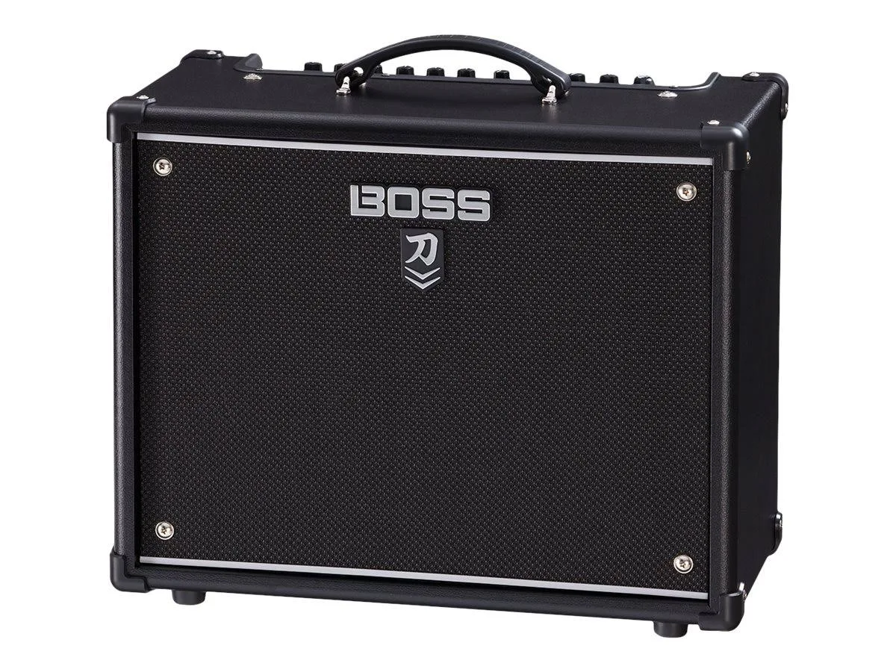
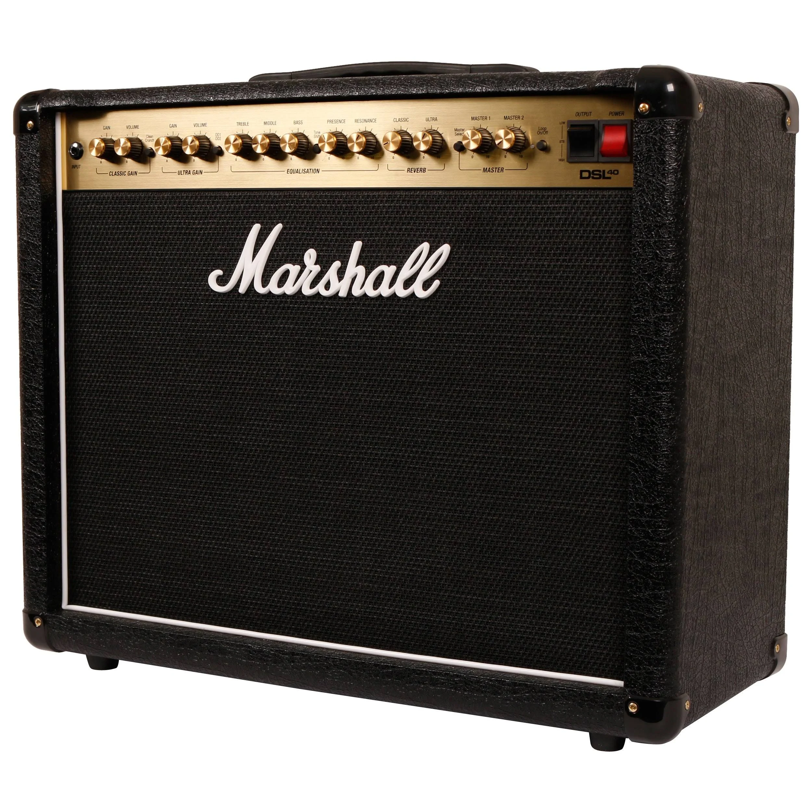

Tu amplificador es la voz de tu instrumento. Una gran guitarra a través de un amplificador pobre sonará mediocre; una guitarra modesta a través de un gran amplificador puede sonar increíble. El amplificador es donde tu tono realmente cobra vida.
Todas las Guías


Los Mejores Amplificadores de Guitarra y Bajo para Cada Músico (2026)
Tu amplificador es la mitad de tu sonido. Después de más de 20 años en escenarios mundiales — desde Broadway hasta clubes de jazz latino — he aprendido que el amplificador correcto lo hace todo más fácil. Estos son los amplificadores de guitarra y bajo en los que más confío, desde práctica hasta el escenario profesional.
Cómo Elegir el Mejor Amplificador de Guitarra o Bajo
Mejor Combo de Guitarra Versátil: Fender Blues Junior IV
El Blues Junior IV es el amplificador pequeño más versátil del mercado. 15 vatios de potencia todo-válvulas es el punto ideal — suficientemente fuerte para clubes y ensayos, suficientemente suave para práctica en casa. El altavoz Jensen de 12 pulgadas ofrece un tono cálido y articulado en todos los géneros. He usado este amplificador en fosos de Broadway, conciertos de jazz latino y clubes de rock. El reverb de resorte es musical y el fat boost impulsa los solos sin turbidez. A $699, es la mejor inversión que un guitarrista profesional puede hacer.
Fender Blues Junior IV
$699 USD
El amplificador combo boutique por excelencia. 15 vatios de potencia todo-válvulas a través de un altavoz Jensen de 12 pulgadas. EQ de tres bandas, reverb de resorte y fat boost lo convierten en el pequeño amplificador más grabado de la historia. Desde clubes de blues hasta cafés de jazz latino, el Blues Junior ofrece un tono cálido y responsivo que hace sonar mejor a todo guitarrista.
Mejor Amplificador de Modelado Económico: Boss Katana 50 MkII
El Katana 50 MkII es el amplificador que cambió el juego para los músicos con presupuesto limitado. Cinco voces de amplificador cubren todo, desde limpio prístino hasta metal de alta ganancia. Los efectos incorporados son genuinamente utilizables — delay, reverb, chorus, flanger, tremolo y más. Con 50 vatios, es suficientemente fuerte para conciertos pero el atenuador de potencia incorporado te permite subir el tono a volumen de habitación. La conexión USB facilita la grabación. A $259, esta es la mejor relación calidad-precio en amplificación — punto.

Boss Katana 50 MkII
$259 USD
El amplificador de modelado más vendido del mundo. 50 vatios de potencia con cinco voces de amplificador — clean, crunch, lead, brown y acústico. Efectos incorporados incluyendo delay, reverb, chorus y más. El Katana 50 es el amplificador definitivo para práctica y pequeños conciertos para guitarristas que quieren versatilidad sin complejidad ni costo.
El Sonido Británico Legendario: Vox AC30
El Vox AC30 es uno de los amplificadores más grabados de la historia. Su circuito único top-boost entrega un tono limpio brillante y tintineante que corta cualquier mezcla. Los dos altavoces Celestion de 12 pulgadas producen un sonido lleno y tridimensional que llena cualquier sala. Desde el brillo de The Beatles hasta las armonías superpuestas de Queen, el AC30 es esencial para músicos de indie, rock y alternativa. A $1,099, es una inversión en el sonido que definió la música rock moderna.
Vox AC30
$1.1k USD
El sonido del rock británico. 30 vatios de potencia todo-válvulas a través de dos altavoces Celestion de 12 pulgadas. El icónico brillo que definió a The Beatles, Queen e innumerables bandas de rock británico. El canal Top Boost ofrece esa presencia cortante inconfundible. Para guitarristas que quieren el sonido de la historia del rock.
Potencia de Rock Clásico: Marshall DSL40CR
Si el rock es tu idioma, el Marshall DSL40CR es tu amplificador. Los dos canales te dan ganancia clásica para crunch de blues-rock y ultraganancia para hard rock y metal. La sección de potencia todo-válvulas de 40 vatios tiene ese inconfundible golpe Marshall — graves ajustados, medios pronunciados y agudos cantarines. La reducción de potencia incorporada cambia a 20 vatios para lugares más pequeños. A $999, el DSL40CR entrega el sonido que construyó el rock and roll.

Marshall DSL40CR
$999 USD
El amplificador de rock clásico reimaginado. 40 vatios de potencia todo-válvulas a través de un altavoz Celestion V-type de 12 pulgadas. Dos canales con ganancia clásica y ultraganancia para todo, desde blues limpio hasta rock pesado. El DSL40CR es el sonido Marshall por excelencia — medios contundentes, crunch y ese rugido británico inconfundible.
Tono de Bajo Legendario: Ampeg PF-500 Portaflex
Ampeg definió el sonido del bajo eléctrico. El PF-500 Portaflex entrega ese autoritario extremo grave en un paquete ligero y portátil. El EQ de 3 bandas con selector de frecuencia ultra-media te permite marcar desde el golpe de Motown hasta el puñetazo del rock moderno. El compresor incorporado suaviza tu dinámica sin matar tu sensación. Con 500 vatios a través de cualquier gabinete de calidad, el PF-500 te da la base que impulsa la salsa latina, el rock y el funk. El sonido que has escuchado en miles de discos.
Ampeg PF-500 Portaflex
$649 USD
El amplificador de bajo que definió el rock and roll. 500 vatios de potencia Clase D en un cabezal ligero y portátil. Legendario tono Ampeg con EQ de 3 bandas, selector de frecuencia ultra-media y compresor incorporado. El PF-500 entrega ese retumbante extremo grave que impulsó Motown, el rock y la música latina durante décadas. Combínalo con cualquier gabinete para obtener un tono de bajo clásico instantáneo.
El Estándar Moderno del Bajo: Fender Rumble 500 V3
El Rumble 500 V3 redefinió lo que un combo de bajo podía ser. Dos altavoces Eminence de 10 pulgadas ofrecen un tono contundente y articulado que se asienta perfectamente en cualquier mezcla. El EQ de 9 bandas te da control quirúrgico sobre tu sonido. El overdrive incorporado añade garra cuando la necesitas. Y con solo 12.7 kg, es el combo de 500 vatios más ligero del mercado. Para bajistas latinos, el control de medios es esencial para cortar a través de las secciones de viento. Para roqueros, el canal de overdrive ofrece un growl que compite con cualquier amplificador de guitarra.
Fender Rumble 500 V3
$799 USD
El estándar moderno del bajo. 500 vatios de potencia a través de dos altavoces Eminence de 10 pulgadas. Diseño ligero de solo 12.7 kg. Tono limpio y contundente con overdrive incorporado, EQ de 9 bandas y salida directa XLR. Desde salsa latina hasta rock y jazz, el Rumble 500 ofrece un tono de bajo profesional en un paquete que puedes llevar con una mano.
Veredicto:
Blues Junior para versatilidad, Katana para presupuesto, Rumble para bajo
Conclusión
El Fender Blues Junior IV es el amplificador de guitarra más versátil para músicos profesionales — va del estudio al escenario sin compromisos. Si el presupuesto es ajustado, el Boss Katana 50 MkII te da un valor increíble. Para bajistas, el Fender Rumble 500 V3 es la potencia portátil que entrega tono profesional. Y para ese sonido de rock legendario, el Marshall DSL40CR o el Vox AC30 nunca te defraudarán.